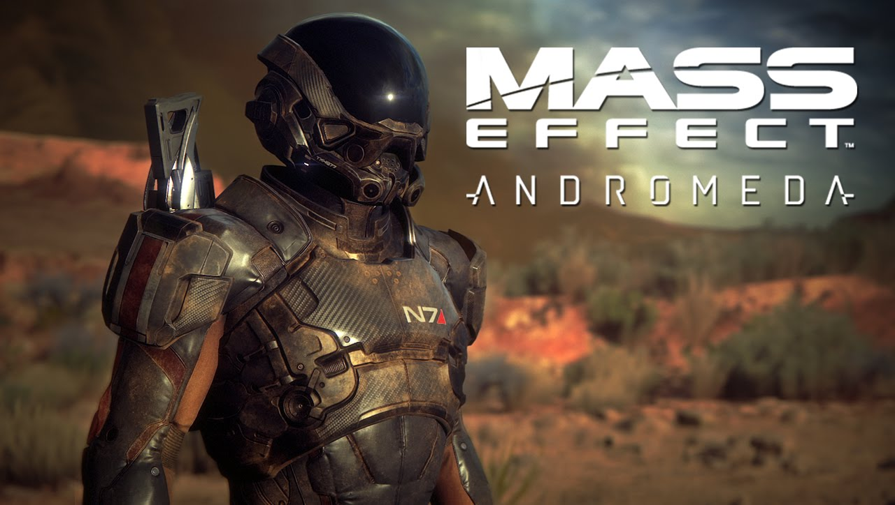
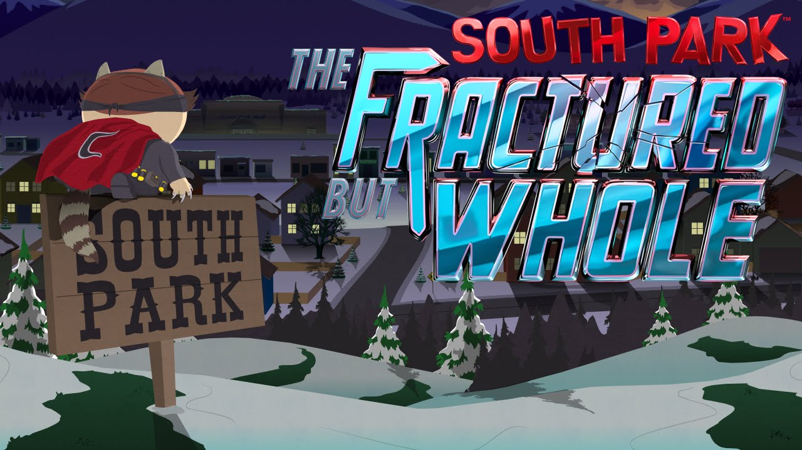
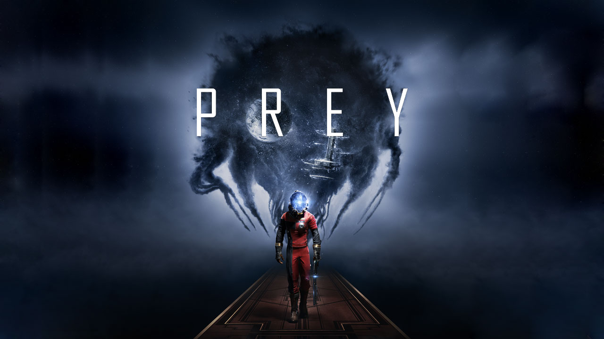
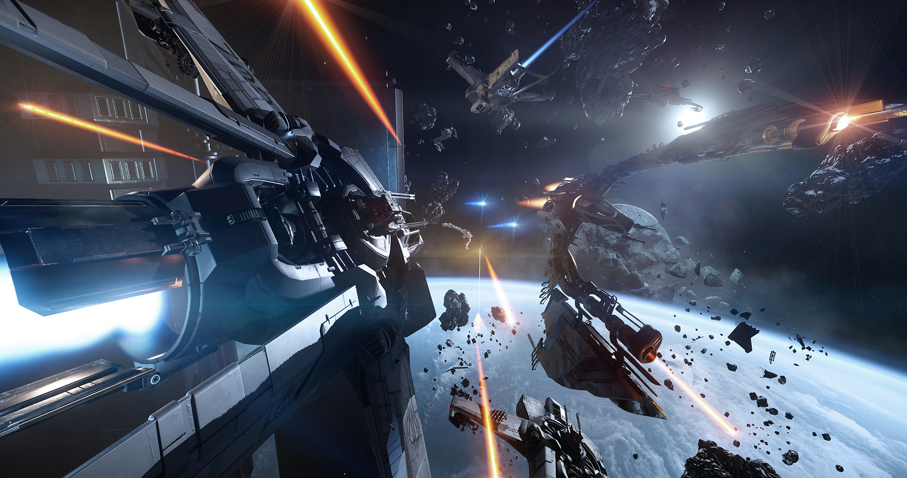

My Top 5 Most Anticipated Games of 2017
2017 is set to be a huge year for gaming.
That said, there are 5 titles in particular that I'm excited to see released.
For Honor

What is it?
For Honor is an upcoming online action hack and slash video game in development by Ubisoft Montreal and set to be published by Ubisoft for Microsoft Windows, PlayStation 4, and Xbox One. It was announced at the 2015 Electronic Entertainment Expo. The game features a melee combat system described as "The Art of Battle" by the developers and allows players to play the roles of historical soldiers such as medieval knights, samurai, and vikings within a Medieval fantasy setting.
Why am I pumped?
For Honor is attempting a hack and slash multiplayer medieval combat game on a scale that hasn't been seen yet. Chivalry would be its closest current game, which is fun, but they are trying it on a much more Battlefield type scale with weapons and maps that make Chivalry look tiny and weak in comparison!
Mass Effect: Andromeda
What is it?
Mass Effect: Andromeda is an upcoming action role-playing third-person shooter video game developed by BioWare and published by Electronic Arts for Microsoft Windows, PlayStation 4 and Xbox One.[3][4][5] A successor to 2012's Mass Effect 3, Mass Effect: Andromeda is the first game to bring the series to an open world environment. The game was officially announced on June 15, 2015, during the Electronic Arts press conference at E3 2015.
Why am I pumped?
Mass Effect is one of my all time favorite games. I played Mass Effect 2 through about 3 times. The open ended quest and immersive interplanetary missions are intriguing and Commander Shepherd's war against the Reapers is awesome. I can't wait to try this one out.
South Park: The Fractured But Whole
What is it?
South Park: The Fractured but Whole is an upcoming role-playing video game developed by Ubisoft San Francisco, in collaboration with South Park Digital Studios and published by Ubisoft for the PlayStation 4, Xbox One and Microsoft Windows. The game is based on the American adult animated television series South Park, and the plot follows after South Park: The Stick of Truth.
Why am I pumped?
South Park is hilarious! I loved the Stick of Truth and laughed out loud many times throughout the game. The gameplay was also surprisingly well done for a game that markets itself as a comedic enterprise. Can't wait for the sequel!
Prey
What is it?
Prey is an upcoming first-person shooter video game developed by Arkane Studios and published by Bethesda Softworks. The game is scheduled for release in May 2017 for Microsoft Windows, PlayStation 4, and Xbox One.
Originally in development by Human Head Studios as a sequel to the 2006 game Prey, the game fell into development hell and was eventually canceled by Bethesda in 2014. Bethesda announced Prey as a re-imagining of the original game at the Electronic Entertainment Expo 2016, with the Austin branch of Arkane Studios taking on development duties.
Why am I pumped?
I played the original Prey back in the day. It was an interesting psychological thriller about a native American captured by aliens. Escaping from the creepy, violent and downright scary environments was thrilling and I am looking forward to the remaster.
Star Citizen
What is it?
Star Citizen is an upcoming space sim video game for Microsoft Windows and Linux. Star Citizen is planned to consist of four main components: first-person space combat, mining, exploration, and trading with first-person shooter elements in a massively multiplayer persistent universe and customizable private servers, and a branching single-player and drop-in co-operative multiplayer campaign titled Squadron 42. The game is built on Amazon Lumberyard.
Why am I pumped?
Because Star Citizen has been in development for years and has been well received by players current players in the open Beta. I expect it to take up where No Man's Sky failed to do so on many levels and offer an intriguing, deep MMORPG experience. Sadly, I probably won't have time to enjoy it with a 1 year old son!